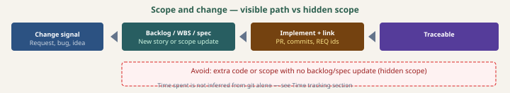

Change control
How to evolve requirements, scope, and architecture without losing traceability — stable IDs, visible scope, ADR history, and honest time accounting (git is not duration).
Canonical bullets live in SDLC.md §5. This chapter expands them for the handbook; keep both aligned.
Why this matters
Teams ship faster when one planning view (backlog, WBS, board) matches what actually ships. Change control is the discipline of recording what changed before or as you implement — so reviews, releases, and audits can answer: which requirement or story authorized this work?
The sections below map to how this blueprint uses documentation layout and optional methodology tracking in project sdlc/.
Process diagram

Stable requirement IDs
If you use hierarchical IDs (M1E2S3, REQ-004, etc.), treat them as keys into specs, tests, and traceability.
- Do not renumber silently once an ID appears in code comments, tests, CSV matrices, or ADRs — readers follow stale pointers.
- Deprecate explicitly: note “superseded by …” in the spec or backlog row; keep the old row for history if your policy allows.
- Renaming schemes (e.g. padding digits) is a migration: batch-update references or maintain an alias table — document the rule in
docs/.
Scope management
Scope is the agreed set of outcomes for a milestone, epic, story, or release. Scope management means every meaningful change to that set is visible in your planning artifacts — not only in chat or in someone’s head.
| Situation | What to do |
|---|---|
| New work appears mid-stream | Add or split a story (or task); link from PR/commits to the new id. Update WBS / board status. |
| Scope shrinks (descope) | Mark items cancelled or move to a future milestone with a short reason; epic “done” still means in-scope children are done. |
| Scope creeps without paperwork | Retro: restore explicit stories after the fact if needed; tighten PR checks so backlog moves with code. |
| Risk from scope | Update risk register when a scope change creates or mitigates exposure (see SDLC.md Phase B). |
Foundation vs sprint scope: Engineering tracking uses scope as a boundary for metrics (repo, path, product). That is not the same as Scrum Sprint scope — see sdlc/SCOPE-WORK-REPO-AND-CURSOR.md in repos that include it.
Where it lives in the tree: milestone and epic boundaries are usually captured under docs/requirements/ — see Documentation layout for the hierarchy and WBS.
Architecture decisions (ADRs)
Significant, somewhat stable technical choices belong in docs/adr/ (or your convention). Change control for ADRs means preserving auditability:
- Supersede, don’t erase: add a new ADR that references the old one and explains what changed.
- Link from code or specs when a module implements a specific decision — IDs stay stable like requirement IDs.
- Regulated / safety contexts: keep enough history to show why a decision was valid at the time, even after pivot.
Time tracking
Git timestamps are not duration. A burst of commits does not measure meeting time, review time, or thinking time. This blueprint separates:
| Layer | What it measures | Typical source |
|---|---|---|
| Activity / touch | When work touched the repo (commits, maybe PR events) | Git + optional aggregates — see engineering tracking events |
| Explicit duration | Minutes or hours with intent (capacity, billing, planning) | External tracker, or in-repo CSV/JSONL under something like metrics/time/ — not the frozen blueprint |
If you log hours in-repo, use stable work unit ids that match your WBS (e.g. M1E2S1) and document field meanings in project sdlc/. Full conventions: sdlc/TRACKING-FOUNDATION.md (“Where duration can live”). Caveats on gaming and misread signals: TRACKING-CHALLENGES.md.
Agentic SDLC also notes that agent-assisted work still needs human-visible intent and linkage — same idea as scope: don’t infer effort from automation noise alone.